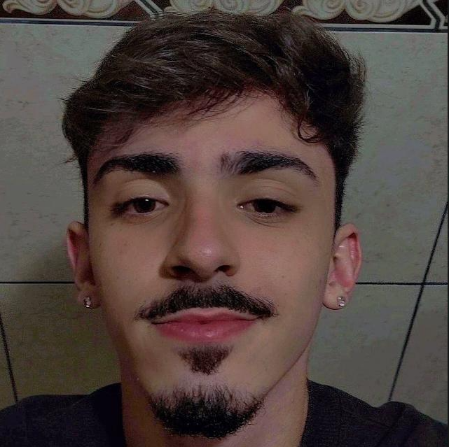

<ion-header [translucent]="true">
  <ion-toolbar>
    <ion-buttons slot="start">
      HOME
      <ion-button [routerLink]="['/home']" color="medium">
        <ion-icon slot="icon-only" name="arrow-back-circle"></ion-icon>
      </ion-button>
    </ion-buttons>
    <ion-title>Identificação</ion-title>
  </ion-toolbar>
</ion-header>

<ion-content [fullscreen]="true">
  <ion-header collapse="condense">
    <ion-toolbar>
      <ion-title size="large">Identificação</ion-title>
    </ion-toolbar>
  </ion-header>

    <div id="container">
      <ion-card class="info-card">
        
          <ion-card-header>
            <ion-card-subtitle>Nome:</ion-card-subtitle>
            <ion-card-title>Daniel Nicola Lima Castelo Branco</ion-card-title>
            <ion-card-subtitle>Turma:</ion-card-subtitle>
            <ion-card-title>PAS23103</ion-card-title>
            <ion-card-subtitle>Unidade:</ion-card-subtitle>
            <ion-card-title>Campo Grande</ion-card-title>
            <ion-card-subtitle>Horário:</ion-card-subtitle>
            <ion-card-title>Noite</ion-card-title>
          </ion-card-header>
        </ion-card>
    </div>
</ion-content>
